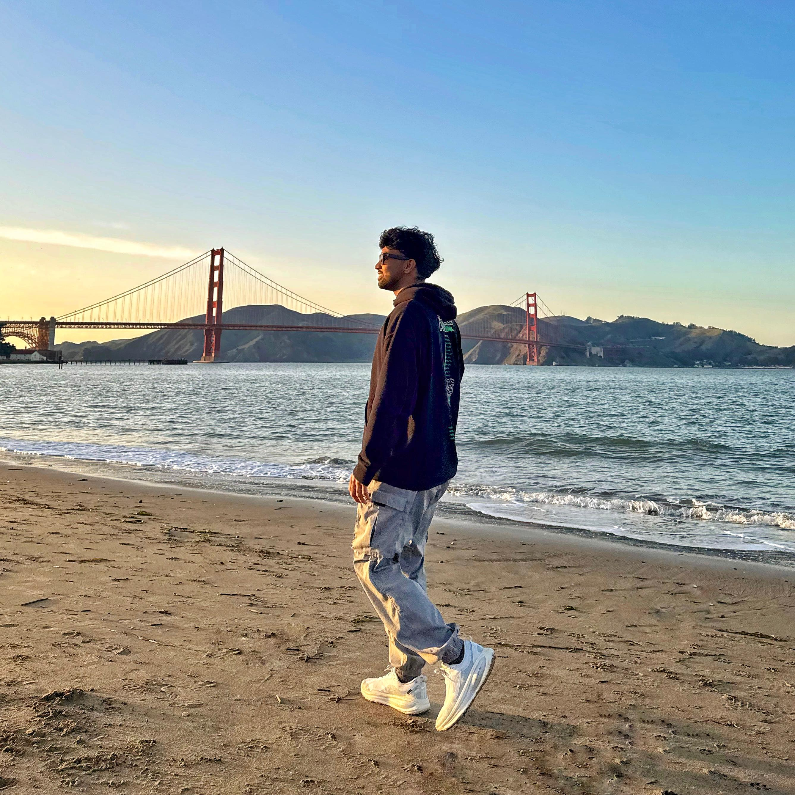

Role: Front-End Engineer

Fun fact: I’m usually down for the beach, a good playlist, and a clean sunset view
Hey, I’m Lasiru. I’m one of the frontend engineers on this project. When I’m not coding, you’ll probably find me surfing, playing guitar, or on the basketball court. I like mixing creativity with tech, whether that’s in music, design, or code.